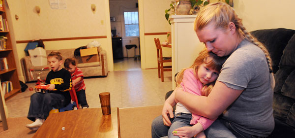

Service
The purpose of this site is offer volunteer service to those willing to give and offer this service:
Have I done any good in the world today?
Have I helped anyone in need?
Have I cheered up the sad and made someone feel glad?
If not, I have failed indeed.
This a question asked that a times we feel a little prink in our hearts when we are asked, but I think I have an answer to that question with the creation of a site that can link those who want volunteer service with those who want to give volunteer service.
Target audience for this site is basically anyone who needs help so far they are of age (Which might require consent). It can be a young woman or man, an elder lady, a single mother and so on.

Name: Sera Drakes
Age: 45
Marital Status: Single/Divorced
Occupation: Walmart Employee
Sera is a single mom who lives with her three kids and has been looking
help in clearing her back yard, which is beginning to attract strange
creatures she needs someone who can assist her with this crisis.
Name: Eddie Ekpo
Age: 22
Marital Status: Single
Occupation: Student at BYU-Idaho
Eddie Ekpo is an international student at BYUI, and as a new student is
finding it difficult to move around but with this website she can put
up an advert for a volunteer who can give her a ride.
© Copyright 2011